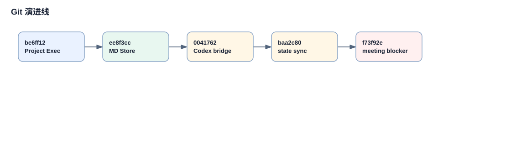

主流程历史演进：从单体办公室到项目自动化
当前 `server.py` 的体量容易让人误以为项目一开始就是多 provider、多工作流平台。Git 历史不支持这个判断。更准确的读法是：单体办公室不断吸收配置、presence、项目自动化、provider adapter、会议和归档能力。
历史时间线

时间线只表达 commit/tag 顺序，不把每个设计动机都画成确定事实。
| 阶段 | 证据 | 含义 |
|---|---|---|
| 初始单体办公室 | `2b7b6ae Initial release` | README、chat.js 和 server.py 是主干。 |
| 产品化配置和 presence | `89b9fb8 v0.3.0`、`1b77663 v0.4.0`、`11effd7 v0.5.0` | settings、setup wizard、meetings dashboard、gateway presence 进入服务端。 |
| Projects & Tasks | `be6ff12 v0.6.0` | Kanban、workflow pipeline、review system 大量并入。 |
| MarkdownProjectStore | `ee8f3cc` | 项目数据从 JSON 转向 Markdown/frontmatter。 |
| Provider adapter | `40e917a`、`d3388db`、`0041762` | Hermes 先进入，Codex harness/bridge 后进入。 |
| 状态机和会议阻塞 | `baa2c80`、`f73f92e` | project execution 状态转移被修复，meeting blocker 成为任务阻塞机制。 |
连续历史叙事
初始单体办公室
`2b7b6ae` 新增 README、`app/chat.js` 和 `app/server.py`。这说明早期核心是 OpenClaw Virtual Office Web 应用，server 负责本地 HTTP/API，chat.js 承载前端聊天。
配置、presence、setup 进入服务端
v0.3.0 到 v0.5.0 之间，server.py 多次增长，API usage、model picker、settings save、presence integration、setup wizard、meetings dashboard 都进入中心文件。
v0.6.0 项目自动化爆发
`be6ff12` 是 Projects & Tasks 分水岭，commit message 明确列出 Kanban、任务 CRUD、后台 workflow pipeline、OpenClaw dispatch、self-review、auto-resume 和 review system。
数据模型外置
`ee8f3cc` 新增 `app/project_store.py`，commit message 写明切换到 MarkdownProjectStore。后续复杂字段增长都围绕这个存储层。
Provider adapter 扩张
`40e917a` 创建 HermesProvider；`d3388db` 创建 CodexProvider；`0041762` 创建 Codex bridge。多平台能力先从 adapter 边界进入，再被 server 路由使用。
批量需求合并和状态机修复
`53a6c1b`、`18a496f` 是大提交，只能证明功能批量合并和文件增长。`baa2c80` 明确修复 project execution state transitions，`f73f92e` 明确实现 blocking meeting requests。
关键 commit 证据
| commit | 证据摘要 |
|---|---|
| `be6ff12` | `app/projects.js +2252`、`app/server.py +2691`，Projects & Tasks 主功能并入。 |
| `ee8f3cc` | 创建 `app/project_store.py`，说明 “Switched from JSON to MarkdownProjectStore backend”。 |
| `40e917a` | 创建 `app/providers/hermes.py` 和 `app/providers/__init__.py`。 |
| `d3388db` / `0041762` | Codex harness MVP 与 live bridge 进入仓库。 |
| `baa2c80` | 标题为 Fix project execution state transitions，说明当前状态机有后补修复来源。 |
| `f73f92e` | Implement blocking meeting requests for project tasks，引入 meeting blocker。 |
不可验证项
`app/provider_execution.py`、`app/provider_app_server.py`、`app/providers/claude_code.py` 当前未被 Git 跟踪；历史页不能声称它们在某个 commit 中被引入。`53a6c1b` 是超大批量提交，能证明功能合并和规模，但不能单凭 stat 精确解释每个函数的设计动机。